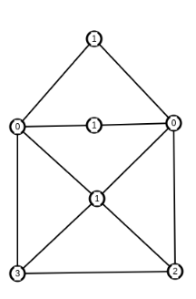
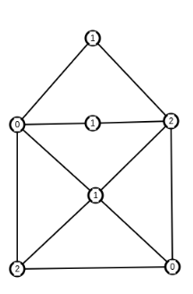
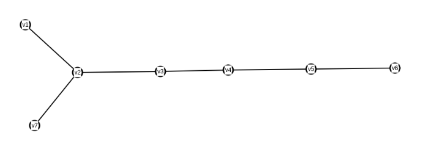
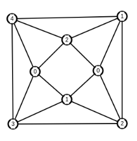
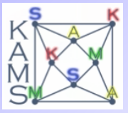

Algorytm ten koloruje wierzchołki zachłannie zaczynając od wierzchołka o największym stopniu, a kończąc na tym o najmniejszym. Jego złozoność obliczeniowa wynosi O(m + n)
Algorytm LF może pokolorować ten graf w kolejności: v2, v3, v4... lub v2, v4, v3, ... natomiast w przypadku kolorowania według według tej drugiej kolejności, algorytm zwróci nieoptymalne rozwiązanie (tj. użyje 3 kolorów zamiast dwóch)
 
Algorytm: - Redukuj graf poprzez wyciąganie z niego wierzchołków o najmniejszych stopniach tak długo, aż graf będzie pusty, zapamiętując przy tym kolejność wyciągania wierzchołków - koloruj zachłannie wierzchołki wedle tej kolejności
Schemat kolorowania grafu:  Kolejność wyciągania wierzchołków: v6, v5, v4, v3, v2, v7, v1
Algorytm ten optymalnie koloruje grafy Johnsona.
 
Jest to funkcja służąca do ocenienia optymalności rozwiązań danego algorytmu względem wielkości grafu.
$D(n) = max_{|G| = n}\{ \frac{A(G)}{\chi(G)}\}$
Tempo wzrostu funkcji dobroci dla algorytmów LF i SL wynosi O(n). Natomiast rozmiary grafów SHC i HC określają nam, przy jakim n nasz algorytm zaczyna dawać nieoptymalne rozwiązania (tj. D(n) dla n < |HC| wynosi 1)